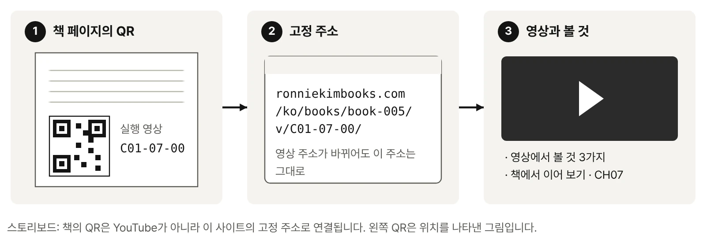
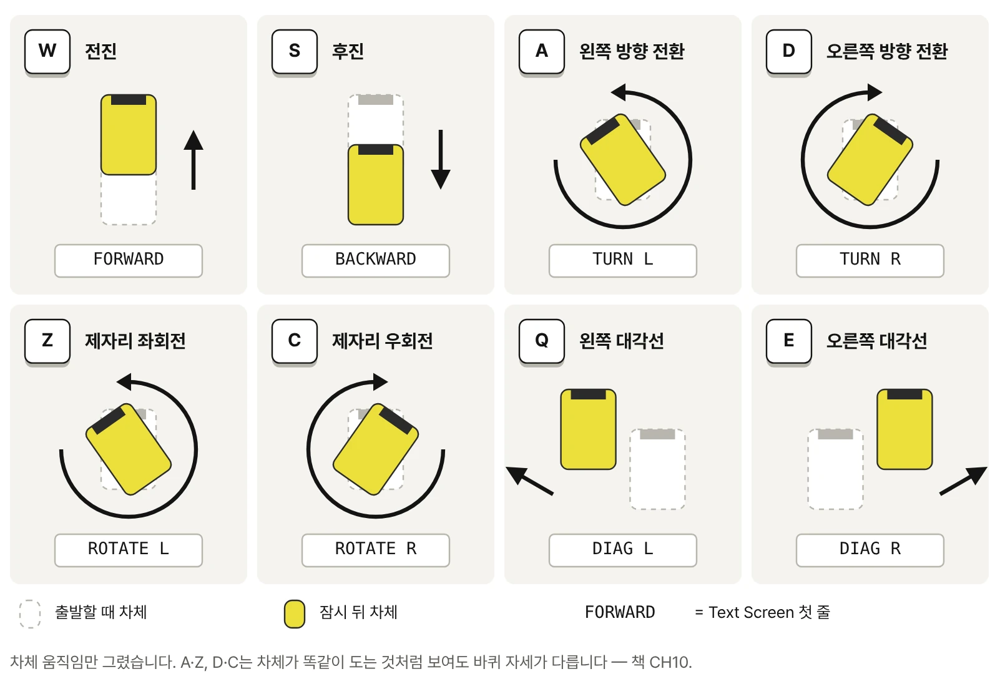
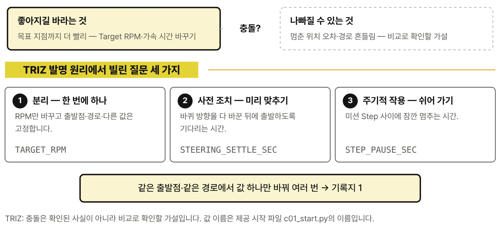
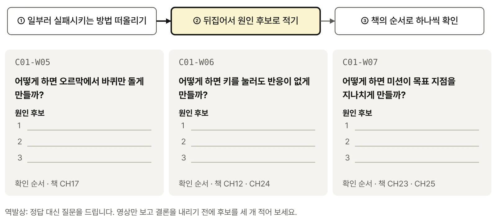
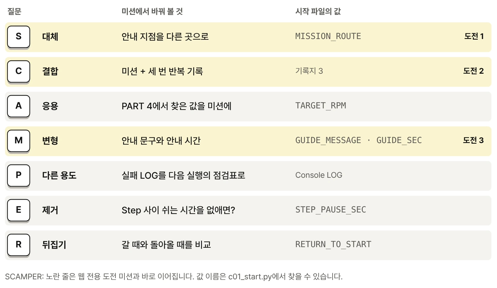

로봇 구성과 분해도 C01-06-00
- 바퀴 모듈마다 구동 모터와 조향 서보가 한 묶음으로 붙어 있는 모습
- 차체 위 안내 화면판이 따로 떨어져 나오는 위치
- 네 바퀴 모듈이 다시 제자리에 결합되는 순서
피지컬 AI로 배우는 RoboCo 로봇 구조와 Python 제어 · 웹 전용

웹 전용 · 영상 중심
이 페이지는 책의 내용을 옮겨 놓은 곳이 아닙니다. 종이 위에서는 멈춰 있는 장면을 실제로 움직이는 영상으로 보여 주고, 책에 싣지 않은 비교 영상·실패 장면·도전 미션을 모읍니다. 영상마다 무엇을 볼지만 적어 두었습니다. 왜 그렇게 움직이는지, 어떻게 바꾸는지는 책의 해당 Chapter에서 이어집니다.
YouTube 공개 11편 최종 미션 · 로봇 구성 · Port 연결 · 8가지 움직임 · 값 비교 · 실패 장면 · 설치
책의 마지막 미션을 실제로 끝까지 실행한 영상입니다. 키 하나로 출발한 로봇이 안내 지점까지 가서 화면판을 펼치고, 다시 접은 뒤 같은 길을 되짚어 돌아옵니다. 책 CHAPTER 25의 QR 코드가 이 영상으로 연결됩니다.

책의 PART 2는 그림과 표로 로봇의 구조를 풀어 갑니다. 여기서는 같은 로봇을 직접 분해하고, Microcontroller의 연결을 따라가는 장면을 영상으로 봅니다. 두 영상은 책 CHAPTER 06과 07의 QR 코드로도 연결됩니다.
왜 Port를 자동 추론에 맡기지 않고 직접 지정하는지는 책에서 다룹니다.
책에서 이어 보기 · CH07책에서는 멈춘 그림으로 보여 주는 움직임을 실제 속도로 봅니다. 키마다 짧게 끊어 두었으니 아래 카드의 장면을 먼저 찾아보세요.

A와 Z는 둘 다 차체를 왼쪽으로 돌리지만 바퀴 자세가 전혀 다릅니다. 이 차이를 만드는 구조는 책에서 네 바퀴를 위에서 내려다본 그림으로 풀어 봅니다.
책에서 이어 보기 · CH10같은 출발점과 같은 경로에서 설정값 하나만 바꾼 두 실행을 나란히 재생합니다. 숫자보다 장면의 차이를 먼저 보세요. 어떤 조건을 같게 두어야 공정한 비교인지, 결과를 어떻게 기록하는지는 책 PART 4에서 다룹니다.

성공한 장면보다 실패한 장면에서 더 많이 배웁니다. 실제로 자주 만나는 실패를 그대로 보여 줍니다. 영상만 보고 답을 정하지 말고 원인 후보를 먼저 적어 보세요. 원인을 좁혀 가는 순서는 책에 있습니다.

책 출간 이후 추가한 실습 영상입니다.
Steam 설치부터 Sandbox 진입, 로봇 불러오기, 시작 파일 연결, 첫 실행까지 실제 화면을 녹화해 보여 줍니다. 설치 화면은 자주 바뀌기 때문에 책에는 바뀌지 않는 최소 경로만 싣고, 최신 화면은 이곳에서 갱신합니다.
책의 최종 미션을 마친 뒤 이어서 해 볼 과제입니다. 정답 코드는 싣지 않습니다. 과제를 푸는 데 필요한 개념과 방법은 표시한 Chapter에 있습니다.
기준 맵에서 책과 다른 안내 지점을 골라 새 경로를 만들고, 안내 후 출발점으로 돌아오게 합니다.
pause) 1회 이상 포함같은 미션을 세 번 실행해 복귀 위치를 기록한 뒤, 값 하나만 고쳐 다시 세 번 실행합니다.
안내 지점의 목적에 맞는 문구를 정해 화면판이 펼쳐질 때 한눈에 읽히게 만듭니다.

책의 실습을 바로 실행할 수 있는 파일 묶음입니다. 파일마다 Version과 호환 정보를 함께 표기합니다. 압축을 풀 위치와 연결 방법은 책의 「시작하기」, 파일 구조는 부록 A에 있습니다.
키보드 조종용 Book-CORE-01-CONTROLS(CH01·CH20)와 Python 제어용 Book-CORE-01-SCRIPT_PART(CH02~25). 불러오는 방법은 책의 「시작하기」를 따릅니다.
Book_C01_Robot release v1.6.3 · 주행·실험·미션을 실행하는 실습 코드입니다. 주석과 README가 한국어입니다. RoboCo Scripts 폴더 바로 아래에 압축을 풉니다.
실습 파일 페이지 — 파일별 내려받기·폴더 구성·Version·확인값

Book-CORE-01-CONTROLS
Book-CORE-01-SCRIPT_PART| 원고 기술 기준 | Book_C01_Robot release v1.6.3 · RoboCo API 0.3.1 |
|---|---|
| 로봇 파일 | Book-CORE-01-CONTROLS · Book-CORE-01-SCRIPT_PART (2026-09-30) |
| 실험·미션 기록지 | A4 3쪽 (2026-10-08) · 내려받기 |
| 파일 확인값 | SHA-256 · manifest.json |
| 호환 정보 | RoboCo 업데이트로 화면이나 동작이 달라지면 이곳에 호환 정보와 갱신 파일을 게시합니다. |
| 정오표 | 현재 등록된 정오표가 없습니다. 확인된 수정 사항은 날짜와 함께 이곳에 게시합니다. |
책과 화면·기록·키 동작이 다르면 먼저 Version을 확인합니다. 시리즈의 다른 권은 책 소개의 시리즈 표에서 확인할 수 있습니다.